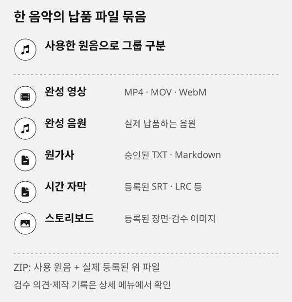

공개 명령과 등록 계획
이 페이지의 기능과 다음 단계를 확인한 뒤 제작실에서 작업하세요.
이 문서 목차
공개 명령 레퍼런스는 현재 설치본에서 지원하는 명령·입력값과 결과 등록 계획을 읽는 페이지입니다. 실제 기준은 실행 중인 설치본의 schema입니다. 제작실의 상세 활용 가이드는 장르·스타일·옵션·작업 흐름을 조합한 30개 일반 제작 레시피를 제공하며, CCM 전문 제작은 별도 CCM 페이지에서 다룹니다.
아래 항목은 실제 완성 파일이 등록된 경우에만 제공됩니다.
- 완성 영상
MP4 · MOV · WebM
- 완성 음원
제작 후 납품하는 음원
- 원가사
승인한 TXT · Markdown
- 시간 자막
SRT · LRC 등 실제 등록 파일
- 스토리보드
등록된 장면·검수 이미지
음악 그룹 ZIP사용한 원음과 위 등록 파일을 함께 받습니다. 프로젝트별 의견과 제작 기록은 상세의 검수·제작 기록 메뉴에서 별도로 확인합니다.
SVG 도식 원본 보기

이 페이지에서 보는 두 가지
- 제작 활용 참고악기·구성·비교·YuE 고급 입력을 언제 쓰는지, 피할 때와 예시 요청을 카테고리·태그로 찾습니다. 장르·스타일·옵션·가사·검수·영상 연결 레시피는 상세 활용 가이드에서 목적·스타일·태그로 좁혀 볼 수 있습니다. 이는 현재 공개 입력을 이해하기 위한 안내 자료이며 생성 결과를 보장하지 않습니다.
- 공개 명령현재 설치된 CLI의 명령, 입력 필드, 읽기·변경·삭제 성격을 확인합니다. 카드의 복사 버튼은 해당 명령의
schema조회만 복사합니다.
상단 검색은 두 영역을 함께 찾습니다. 악기, 구성, 비교, 고급 옵션, 가이드 카테고리와 태그로 제작 활용 참고를 좁히고, 명령 그룹·성격으로 공개 명령을 좁힐 수 있습니다. 상세 활용 가이드는 새 음악 제작, 가사 수정, 편곡 비교, 영상 연결, 검수·복구 목적과 발라드·포크·시네마틱 같은 스타일, 태그를 함께 필터링합니다. 악기 카드는 현재 song:generate.parts.instruments의 허용값에서 만들어지므로, 설치본이 지원하지 않는 악기를 목록에 추가하지 않습니다.
빠른 활용 순서
- 원하는 악기·구성 카드를 찾아 예시 요청을 복사하거나 문장을 자신의 목표로 바꿉니다.
prompt:compose또는song:prepare로 조합된 style·입력값을 먼저 확인합니다. 둘은 곡을 생성하지 않습니다.- 보컬곡은 최종 가사와 caption을 검토하고, YuE는
yue:capabilities로 해당 엔진의 지원 범위를 확인합니다. - 실제 생성은 승인된
song:generate입력으로 한 번만 제출하고, 반환된jobId를 기다려 실제 파일·길이를 확인합니다.
상세 활용 가이드의 조합 읽기
각 레시피에는 복사 가능한 완결된 한국어 요청과 다음 정보가 있습니다.
- 조합 요소가사·style·악기·BPM·구조·seed·ABC를 왜 함께 쓰는지 설명합니다.
- 명령 순서와 이유
schema확인부터job:wait, 결과·제작 기록까지의 실제 공개 명령만 나열합니다. - 응용 변형한 번에 한 요소만 바꾼 두 가지 이상 변형입니다. 여러 변수를 동시에 바꿔 결과 원인을 잃지 않게 합니다.
- 기대 결과와 한계입력이 요청하는 방향과 보장하지 않는 결과를 분리합니다.
필터의 목적은 작업 의도, 스타일은 장르 분류입니다. 더 긴 편성·보컬·구성 의도는 카드의 요약·조합 요소·복사 프롬프트에서 확인합니다. count는 같은 사양 후보 수이므로, 서로 다른 장르를 하나의 후보 요청에 섞지 않습니다.
엔진과 자동 이력의 경계
상세 활용·CCM 페이지의 엔진은 ACE 또는 YuE 중 하나만 고릅니다. 기본·초기화 상태는 YuE입니다. 공통 카드는 엔진 선택 대상이 아닌 조회·검토·정리 흐름입니다.
음악 생성과 영상 렌더는 요청·작업·결과 파일 이력을 자동으로 남깁니다. 그래서 생성 뒤에는 production:prompts, production:tasks, production:files로 조회하고 같은 작업을 수동으로 다시 등록·종료하지 않습니다. 실제로 별도 검수 작업을 수행할 때만 production:request → production:task-start → production:task-finish 순서로 그 독립 작업을 기록합니다.
YuE ABC 수정은 source·candidate를 각각 score:inspect하고 score:compare의 invariants로 보존 조건을 확인합니다. 가사/style을 바꾼 경우 전체 변경 입력과 abc로 새 prepare→generate를 사용합니다. 원곡의 가사/style을 그대로 둔 악보 수정에만 실제 dir·abc의 song:render를 사용합니다. 모두 전체 새 음원이며 jobId를 기다립니다.
악기와 옵션을 요청으로 바꾸는 예시
ACE 피아노·첼로 보컬곡
piano, cello은 parts.instruments에 넣을 수 있는 공개 값입니다. 가사 전달을 우선하는 잔잔한 발라드에 적합합니다. 드럼 중심의 댄스·록에는 strict:true를 같이 켜지 않습니다.
ACE로 한국어 발라드 1곡을 준비해줘. 피아노와 첼로, 68 BPM,
절제된 벌스와 커지는 후렴으로 구성하고 생성 전 최종 가사·caption·입력 JSON을 보여줘.기대 효과는 피아노·첼로 중심의 편곡 방향입니다. 특정 연주 방식이나 음색의 고정은 보장하지 않습니다.
공통 테마형 연주곡
보컬이 필요 없을 때는 instrumental:true와 parts.structure:"theme"을 씁니다. 이 설정은 입력 가사를 사용하지 않고 연주곡 골격을 만드므로, 기존 보컬 가사를 유지할 곡에는 쓰지 않습니다.
연주곡 1곡을 준비해줘. piano·french horn·orchestra, 96 BPM,
cinematic instrumental과 희망적인 점진적 전개, instrumental:true,
structure:"theme"으로 하고 targetSeconds는 목표값으로 기록해줘.targetSeconds는 엔진별 목표값 또는 기록용 값이며, 실제 길이는 완성 파일로 확인해야 합니다. 완벽히 이어지는 오디오 루프도 보장하지 않습니다.
같은 입력의 후보 비교
가사·스타일·악기·BPM을 고정한 뒤 seed만 바꾸고 싶을 때 사용합니다. count는 서로 다른 장르를 한 번에 만드는 기능이 아니라 같은 사양 후보 수입니다.
현재 가사·스타일·악기·BPM은 유지하고 seed만 바꾼 후보 2개를 준비해줘.
생성 전 입력을 확인하고 완료 후 각 결과의 실제 dir·seed·길이를 비교할 수 있게 알려줘.같은 seed도 다른 환경에서 같은 음원을 보장하지 않습니다. 후보의 우열은 실제 청취와 검수로 정합니다.
공통 명령을 실행하기 전
/reference/또는node cli/road-music.js schema로 명령과 필드를 확인합니다.- 곡·프로젝트·출력 파일은 목록 응답에서 받은 실제 절대 경로를 사용합니다.
- 음악 생성은
jobId를 기다려 완료를 확인하고, 영상 렌더는 지정한 출력 경로와 상태를 확인합니다. - 결과 등록 전에는
publish --dry-run또는 등록 계획 API로 추가·유지·제거·경고를 검토합니다.
ACE 읽기 명령 예시
아래 명령은 각각 현재 계약·엔진 상태·조합된 프롬프트를 확인하는 데 사용합니다. 설치·생성·삭제를 실행하지 않습니다.
CLI_ROOT="${ROADMUSIC_CLI_ROOT:-/absolute/road-music}"
node "$CLI_ROOT/cli/road-music.js" schema --json '{"command":"song:generate"}'
node "$CLI_ROOT/cli/road-music.js" prompt:compose --json '{"genre":"Korean ballad, female vocal, intimate mood","instruments":["piano","cello"],"bpm":68,"lyrics":"[Verse]\n골목에 남은 작은 불빛"}'
node "$CLI_ROOT/cli/road-music.js" prompt:knowledge --json '{"topic":"ace"}'prompt:compose 결과는 생성물 자체가 아니라 전달할 style 조합입니다. prompt:knowledge는 번들 가이드이며, 실제 허용 필드는 첫 번째 schema 결과가 우선합니다.
감상용 ZIP과 제작자료 ZIP
- 음악 그룹 ZIP사용한 원음과 등록된 완성 영상·완성 음원·원가사·자막·스토리보드만 담습니다.
- 제작자료 ZIPnative 프로젝트, direction·analysis·plan·validation·cue·compose·report 같은 허용된 제작 자료를 별도로 담습니다.
감상용 ZIP에 제작 중간본이나 검증 JSON을 섞지 않습니다. 제작자료도 등록된 파일과 원음 근거가 확인될 때만 받습니다.
영상 렌더 연결 오류 복구
video:render가 uncertain:true로 끝나면 같은 요청을 자동 재제출하지 않습니다. app:state, queue:list, video:state와 지정한 --output 파일을 차례로 확인합니다. 이미 렌더가 진행·완료된 경우 새 렌더를 겹치지 않고, 출력이 없고 상태가 끝난 뒤에만 원인을 기록해 재시도를 판단합니다.
CLI_ROOT="${ROADMUSIC_CLI_ROOT:-/absolute/road-music}"
node "$CLI_ROOT/cli/road-music.js" schema
node "$CLI_ROOT/cli/road-music.js" app:state
node "$CLI_ROOT/cli/road-music.js" video:state